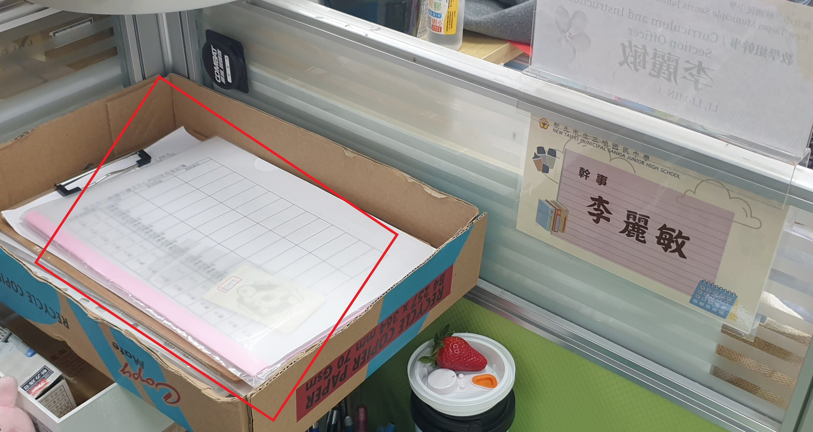
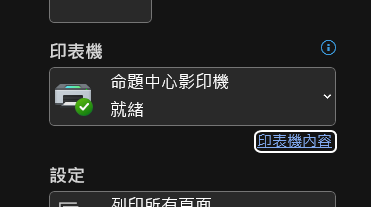
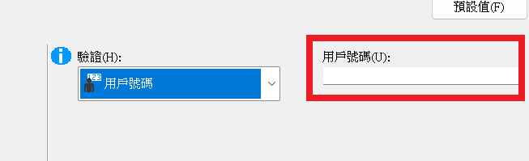
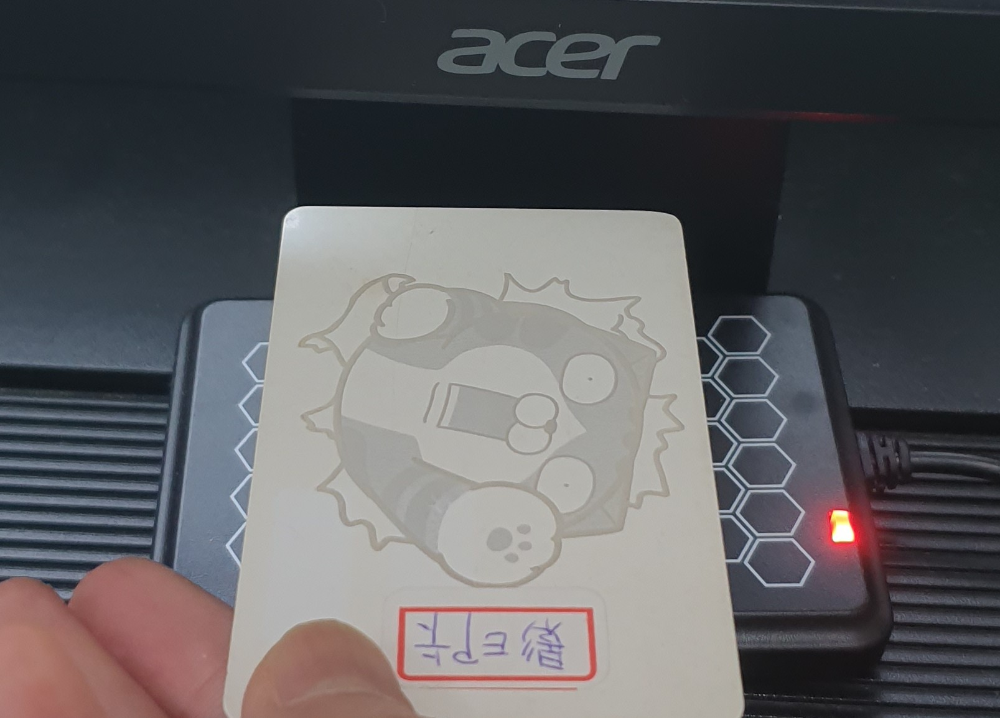
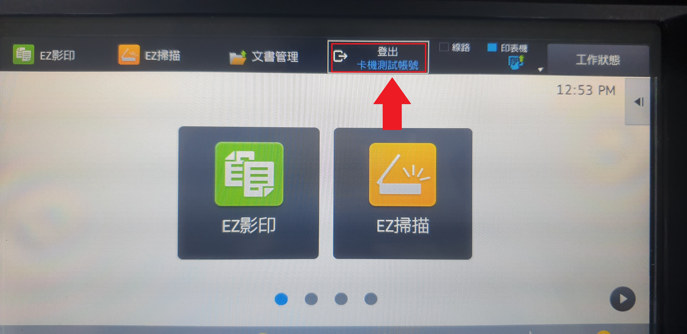
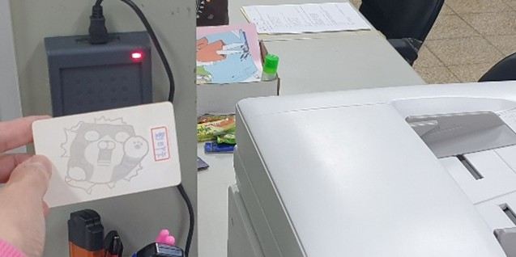

列印前：決定使用哪種帳號？
A. 處理私人/個人教材
請使用 「老師個人帳號」。
不需要拿卡片，只需在列印或影印時，輸入您個人的密碼即可扣除個人配額。
B. 處理公務或班級試卷
請使用 「教務處影印卡」。
👉 請先至教學組幹事辦公桌右上方，拿取登記簿與實體影印卡。
👉 務必於登記簿確實填寫：使用時間、列印內容、班級及教師姓名。
請將 Word 中的「登記簿」照片另存為：
pic_logbook.jpg

一、從電腦發送列印
請將 Word 中的「選擇命題中心影印機」截圖另存為：
pic_step1_printer.png

步驟 1. 選擇印表機
在您的電腦檔案點選「列印」後，請務必將印表機名稱切換為 「命題中心影印機」。
請將 Word 中的「驗證改為用戶號碼」截圖另存為：
pic_step2_auth.png

步驟 2. 修改驗證方式並發送
在印表機內容設定中，請將「驗證」選項改為 「用戶號碼」。
- 用個人帳號：在此直接輸入您的個人密碼，送出即可列印。
- 用教務處影印卡：此處留空，直接送出列印，準備過卡。
請將 Word 中的「螢幕下方讀卡機過卡」照片另存為：
pic_step3_pc_card.jpg

步驟 3. 靠卡感應 (使用影印卡時)
如果您是使用「教務處影印卡」，送出列印後，請將影印卡放置於電腦螢幕下方的讀卡機上進行過卡驗證，機器才會開始列印。
重要：結束請務必登出
作業結束後，請務必按下影印機螢幕上的 [登出] 按鈕！
以免下一位使用者誤用到您的帳號配額。請將教務處影印卡與登記簿，請務必放回教學組原位。
請將 Word 中的「手指按登出」照片另存為：
pic_logout.jpg

二、直接機台影印 (非電腦列印)
於影印機面板登入
若您帶著原稿要直接進行影印，請直接到影印機前：
-
個人列印： 直接在影印機的觸控螢幕上「輸入個人密碼」登入。
-
公務列印： 將教務處影印卡放置於「影印機左側的讀卡機」感應登入。
👉 登入系統後，即可放置原稿開始影印。
重要：結束請記得登出
請將 Word 中的「影印機左側讀卡機過卡」照片另存為：
pic_copier_card.jpg
